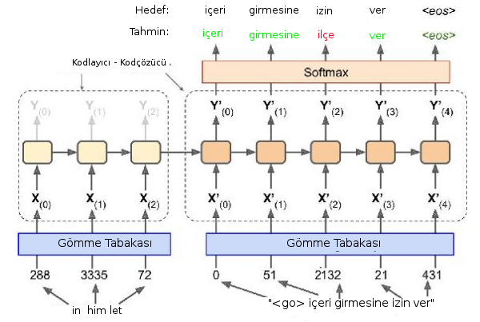

Otomatik Tercüme, Makine Tercümesi (Machine Translation)
Dizin-Dizin İlişkisini Öğrenmek (Sequence to Sequence Learning)
Dillerarası otomatik tercüme yazılımı Google Translate ile popüler hale geldi. Google bu servisi ilk kodladığında parça parça, istatistiki bir yaklaşım kullanarak kodlamış, fakat 2017 yılında bu servis tamamen derin öğrenme üzerinden işleyecek şekilde değiştirildi, kod satır sayısı 500,000'den 500'e indi!
DO bazlı tercüme sistemleri nasıl işler?

Not: kaynak cümlesi ters şekilde girilmiş, bu mimarı ilk teklif edildiğinde bu şekilde yapılıyordu, fakat [3]'e göre her eğitim verisi için dinamik şekilde yaratılabilen RNN hücreleri durumunda buna gerek yok.
Servisin temelinde, üstte görüldüğü gibi bir RNN tabakası var. Fakat bu RNN yapısında ilk (soldaki) bölüm kodlayıcı, ikinci (sağdaki) bölüm kod çözücü olarak planlanmış. Eğitim verisinde kaynak ve hedef cümle beraber, yanyana olarak hem girdi olarak veriliyor, ayrıca tercüme sonuç cümlesi alınıp bir de etiket verisi olarak kullanılıyor, bir farkla, etiketteki cümle zaman indisinde eğitimdeki sonuç cümlenin bir geri kaydırılmış hali.
Kaynak, sonuç tercüme cümleleri farklı boylarda olabilir, hem aynı eğitim noktası içinde birbirlerinden, hem de değişik eğitim noktalarında kendilerinden bile farklı boyutlarda olabilirler, bu sebeple RNN öğe sayıları dinamik şekilde, her eğitim verisine göre farklı olacak. Fakat bu farklı boyutlar karışıklık yaratmıyor, çünkü tercüme için önemli olan şey kodlayıcı bloktan kod çözücü bloğa geçen gizli konum.
Bu konuma daha önceki yazılarda $h$ adı vermiştik. Eğitim süreci şöyle, tüm cümleler + tüm kelimeler üzerinden bir sözlük oluştururuz, bu sözlüğe göre her kelimeye bir tam sayı indis değeri atarız, sonra kelimeleri tam sayılara çevirip gömme tabakasına veririz, bu tabaka reel sayı içeren vektörlere dönüşür, ve eğitim ilerledikçe referans gömme matrisinde kelimelerin temsil değerleri iyileşir. Bunlar otomatik oluyor tabii, biz soldan sağa YSA'ya her eğitim veri noktasındaki kelimeleri teker teker geçiyoruz, bir eğitim noktası için önce birinci kelimeyi ilk RNN öğesine, oradan çıkan $h$'yi ve ikinci kelimeyi ikinci RNN öğesine, böyle devam ediyor.
Kodlayıcıdan çıkış olduğu anda (dikkat hala tek bir eğitim noktasını işliyoruz) elimizde olan $h$'nin özel bir anlamı var. Üstteki mimariye göre bu gizli katman tüm kaynak cümleyi temsil eden bir $h$'dir. Başta pek değildir ama zaman geçtikçe öyle olacaktır. $h$ boyutu önceden planlanan şekilde, yani cümleye göre küçülüp büyüyen bir şey değil. Neyse tabii ileri besleme orada durmuyor, kod çözücüye devam ediliyor, burada kelimeler sonuç tercümeden geliyor, şimdi onun kelimelerini almaya başlıyoruz ve etikette bahsettiğimiz şekilde kaydırılan kelimelere tekabül edecek şekilde eğitime devam ediyoruz, ve sağa en sona gelince bir eğitim noktası ile işimiz bitiyor.
Hedef kelimeleri softmax olarak planlanmış, yani kod çözücüdeki RNN öğeleri mümkün tüm kelimeler üzerinden bir olasılık vektörü üretiyor. Gerçek dünya uygulamalarında bu yaklaşım külfetli olabilir, çünkü sözlük çok büyük ise softmax boyutu tek bir kelime çıktısı için olasılıkları temsil etmek için çok fazla boyutlu olmalıdır, burada performansı iyileştirebilecek başka bazı yaklaşımlar var, ama kavramsal olarak çıktının sanki her mümkün kelime üzerinden bir softmax olduğunu düşünebiliriz.
Eğitim bittikten sonra hiç görülmemiş yeni test verisi için tercüme nasıl yaparız? Biraz önce gördüğümüz gibi kaynak cümlenin kelimeleri soldan sağa YSA'ya verilir, kod çözücüye geldiğimizde $h$ ile beraber Go sembolü verilecektir, ve bu sembol sonuç tercümede ilk kelimeyi üretir. Tercümenin ilk kelimesini bu şekilde elde etmiş oluruz. Eğer eğitim iyi yapılmışsa derin YSA ilk kelimeyi güzel bir şekilde üretecektir (daha doğrusu softmax tüm kelimelerin olasılıklarını hesaplar, biz bu olasılıklara göre en olası kelimeyi örnekleme yaparak alırız). Sonra bu üretilen kelimeyi alıp alttan YSA'ya (artık kod çözücüde tabii) beslemeye devam ederiz, mesela Go sonucu "içeri'' kelimesi verilmiş, biz "içeri'' kelimesini alttan ikinci RNN öğesine veririz, bu bize üstten "girmesine'' kelimesini üretebilir, böyle devam ederiz.
Dikkat Etme Vektörü (Attention Vector)
Bazı yaklaşımlara göre kodlayıcı bloktan çıkan $h$ bir cümleyi temsil etmek için yeterli görülmüyor, kod çözücü bloğundaki RNN öğelerinden kaynak cümledeki tüm kelimelere giden bir dikkat etme vektörü üzerinden bağlantı koyuluyor. Detaylar [2]'de bulunabilir. Alttaki örnekte İngilizce "I am a student'', yani ben bir öğrenciyim cümlesinin Fransızca karşılığı "Je suis etuidant'' gösterilmiş.

Ayrıca RNN katmanı tek bir zincir olmayabilir, üst üste konulmuş birkaç katmandan da oluşuyor olabilir. Resimde istiflenmiş iki RNN seviyesi görüyoruz mesela.
Not: Bilgisayar ile söyleşi yapılmasını sağlayan chatbot teknolojisi aslında üstteki tercüme teknolojisinin değişik bir kullanımı sadece. Eğer kaynak ve sonuç cümleler aynı cümlenin iki farklı dildeki karşılığı yerine iki kişi arasındaki konuşmalar olsaydı, YSA yapısı gömme tabakası, cümleler alakası üzerinden "bir konuşmayı'' öğrenmeye başlardı. "Nasılsın'' cümlesine "çok iyiyim'' karşılığı veriliyor, bu iki cümle ve onun gibi cümleleri üstteki teknikle eğitince yavaş yavaş YSA nasıl karşılık vereceğini öğrenebilmeye başlıyor.
Örnek kod [1] alttadır, veri [4]'ten.
# translate.py
import pickle
import tensorflow as tf
import numpy as np, os
checkpoint_path = "/tmp/model.ckpt"
from data_utils import (
process_data,split_data,generate_epoch,generate_batch,
)
def rnn_cell(FLAGS, dropout, scope):
with tf.variable_scope(scope):
rnn_cell_type = tf.nn.rnn_cell.BasicLSTMCell
single_cell = rnn_cell_type(FLAGS.num_hidden_units)
single_cell = tf.nn.rnn_cell.DropoutWrapper(single_cell,
output_keep_prob=1-dropout)
stacked_cell = tf.nn.rnn_cell.MultiRNNCell(
[single_cell] * FLAGS.num_layers)
return stacked_cell
def rnn_inputs(FLAGS, input_data, vocab_size, scope):
with tf.variable_scope(scope, reuse=True):
W_input = tf.get_variable("W_input",
[vocab_size, FLAGS.num_hidden_units])
# embeddings will be shape [input_data dimensions, num_hidden units]
embeddings = tf.nn.embedding_lookup(W_input, input_data)
return embeddings
def rnn_softmax(FLAGS, outputs, scope):
with tf.variable_scope(scope, reuse=True):
W_softmax = tf.get_variable("W_softmax",
[FLAGS.num_hidden_units, FLAGS.sp_vocab_size])
b_softmax = tf.get_variable("b_softmax", [FLAGS.sp_vocab_size])
logits = tf.matmul(outputs, W_softmax) + b_softmax
return logits
class model(object):
def __init__(self, FLAGS):
self.encoder_inputs = tf.placeholder(tf.int32, shape=[None, None],
name='encoder_inputs')
self.decoder_inputs = tf.placeholder(tf.int32, shape=[None, None],
name='decoder_inputs')
self.targets = tf.placeholder(tf.int32, shape=[None, None],
name='targets')
self.en_seq_lens = tf.placeholder(tf.int32, shape=[None, ],
name="en_seq_lens")
self.sp_seq_lens = tf.placeholder(tf.int32, shape=[None, ],
name="sp_seq_lens")
self.dropout = tf.placeholder(tf.float32)
with tf.variable_scope('encoder') as scope:
# Encoder RNN cell
self.encoder_stacked_cell = rnn_cell(FLAGS, self.dropout,
scope=scope)
# Embed encoder inputs
W_input = tf.get_variable("W_input",
[FLAGS.en_vocab_size, FLAGS.num_hidden_units])
self.embedded_encoder_inputs = rnn_inputs(FLAGS,
self.encoder_inputs, FLAGS.en_vocab_size, scope=scope)
# Outputs from encoder RNN
self.all_encoder_outputs, self.encoder_state = tf.nn.dynamic_rnn(
cell=self.encoder_stacked_cell,
inputs=self.embedded_encoder_inputs,
sequence_length=self.en_seq_lens, time_major=False,
dtype=tf.float32)
with tf.variable_scope('decoder') as scope:
# Initial state is last relevant state from encoder
self.decoder_initial_state = self.encoder_state
# Decoder RNN cell
self.decoder_stacked_cell = rnn_cell(FLAGS, self.dropout,
scope=scope)
# Embed decoder RNN inputs
W_input = tf.get_variable("W_input",
[FLAGS.sp_vocab_size, FLAGS.num_hidden_units])
self.embedded_decoder_inputs = rnn_inputs(FLAGS, self.decoder_inputs,
FLAGS.sp_vocab_size, scope=scope)
# Outputs from encoder RNN
self.all_decoder_outputs, self.decoder_state = tf.nn.dynamic_rnn(
cell=self.decoder_stacked_cell,
inputs=self.embedded_decoder_inputs,
sequence_length=self.sp_seq_lens, time_major=False,
initial_state=self.decoder_initial_state)
# Softmax on decoder RNN outputs
W_softmax = tf.get_variable("W_softmax",
[FLAGS.num_hidden_units, FLAGS.sp_vocab_size])
b_softmax = tf.get_variable("b_softmax", [FLAGS.sp_vocab_size])
# Logits
self.decoder_outputs_flat = tf.reshape(self.all_decoder_outputs,
[-1, FLAGS.num_hidden_units])
self.logits_flat = rnn_softmax(FLAGS, self.decoder_outputs_flat,
scope=scope)
# Loss with masking
targets_flat = tf.reshape(self.targets, [-1])
losses_flat = tf.nn.sparse_softmax_cross_entropy_with_logits(
logits=self.logits_flat, labels=targets_flat
)
mask = tf.sign(tf.to_float(targets_flat))
masked_losses = mask * losses_flat
masked_losses = tf.reshape(masked_losses, tf.shape(self.targets))
self.loss = tf.reduce_mean(
tf.reduce_sum(masked_losses, reduction_indices=1))
# Optimization
self.lr = tf.Variable(0.0, trainable=False)
trainable_vars = tf.trainable_variables()
# clip the gradient to avoid vanishing or blowing up gradients
grads, _ = tf.clip_by_global_norm(
tf.gradients(self.loss, trainable_vars), FLAGS.max_gradient_norm)
optimizer = tf.train.AdamOptimizer(self.lr)
self.train_optimizer = optimizer.apply_gradients(
zip(grads, trainable_vars))
#self.saver = tf.train.Saver(tf.all_variables())
def step(self, sess, FLAGS, batch_encoder_inputs, batch_decoder_inputs,
batch_targets, batch_en_seq_lens, batch_sp_seq_lens, dropout):
input_feed = {self.encoder_inputs: batch_encoder_inputs,
self.decoder_inputs: batch_decoder_inputs,
self.targets: batch_targets,
self.en_seq_lens: batch_en_seq_lens,
self.sp_seq_lens: batch_sp_seq_lens,
self.dropout: dropout}
output_feed = [self.loss, self.train_optimizer]
outputs = sess.run(output_feed, input_feed)
return outputs[0], outputs[1]
class parameters(object):
def __init__(self):
self.max_en_vocab_size = 30000
self.max_sp_vocab_size = 30000
self.num_epochs = 100
self.batch_size = 20
self.num_hidden_units = 300
self.num_layers = 3
self.dropout = 0.2
self.learning_rate = 1e-3
self.learning_rate_decay_factor = 0.99
self.max_gradient_norm = 5.0
def create_model(sess, FLAGS):
tf_model = model(FLAGS)
print ("Created a new model")
sess.run(tf.initialize_all_variables())
return tf_model
def restore_model(sess, FLAGS):
tf_model = model(FLAGS)
tf_model.saver.restore(sess, checkpoint_path)
return tf_model
def train(FLAGS):
# Load the data
en_token_ids, en_seq_lens, en_vocab_dict, en_rev_vocab_dict = \
process_data('nmtdata/my_en.txt', max_vocab_size=30000, target_lang=False)
sp_token_ids, sp_seq_lens, sp_vocab_dict, sp_rev_vocab_dict = \
process_data('nmtdata/my_sp.txt', max_vocab_size=30000, target_lang=True)
# Split into train and validation sets
train_encoder_inputs, train_decoder_inputs, train_targets, \
train_en_seq_lens, train_sp_seq_len, \
valid_encoder_inputs, valid_decoder_inputs, valid_targets, \
valid_en_seq_lens, valid_sp_seq_len = \
split_data(en_token_ids, sp_token_ids, en_seq_lens, sp_seq_lens,
train_ratio=0.8)
output = open('nmtdata/vocab_en.pkl', 'wb')
pickle.dump(en_vocab_dict, output)
output.close()
output = open('nmtdata/vocab_sp.pkl', 'wb')
pickle.dump(sp_vocab_dict, output)
output.close()
# Update parameters
FLAGS.en_vocab_size = len(en_vocab_dict)
FLAGS.sp_vocab_size = len(sp_vocab_dict)
print ('len(en_vocab_dict)', len(en_vocab_dict))
print ('len(sp_vocab_dict)', len(sp_vocab_dict))
# Start session
with tf.Session() as sess:
model = None
# Create new model or load old one
f = checkpoint_path + ".index"
print (f)
if os.path.isfile(f):
model = restore_model(sess)
else:
model = create_model(sess, FLAGS)
# Training begins
losses = []
for epoch_num, epoch in enumerate(generate_epoch(train_encoder_inputs,
train_decoder_inputs, train_targets,
train_en_seq_lens, train_sp_seq_len,
FLAGS.num_epochs, FLAGS.batch_size)):
print ("EPOCH: %i" % (epoch_num))
# Decay learning rate
sess.run(tf.assign(model.lr, FLAGS.learning_rate * \
(FLAGS.learning_rate_decay_factor ** epoch_num)))
batch_loss = []
for batch_num, (batch_encoder_inputs, batch_decoder_inputs,
batch_targets, batch_en_seq_lens,
batch_sp_seq_lens) in enumerate(epoch):
loss, _ = model.step(sess, FLAGS,
batch_encoder_inputs, batch_decoder_inputs, batch_targets,
batch_en_seq_lens, batch_sp_seq_lens,
FLAGS.dropout)
print (loss)
batch_loss.append(loss)
print ('mean: ', np.mean(batch_loss))
print ("Saving the model.")
model.saver.save(sess, checkpoint_path)
if __name__ == '__main__':
FLAGS = parameters()
train(FLAGS)
Kaynaklar
[1] Mohandas, The Neural Perspective, RNN - Part 3 - Encoder - Decoder,https://theneuralperspective.com/2016/11/20/recurrent-neural-networks-rnn-part-3-encoder-decoder/
[2] TensorFlow, TensorFlow Neural Machine Translation Tutorial, https://github.com/tensorflow/nmt
[3] Géron, Hands-On Machine Learning with Scikit-Learn and TensorFlow
[4] ManyThings Verisi, İngilizce-Türkçe, Tab-delimited Bilingual Sentence Pairs, https://drive.google.com/uc?export=view&id=16fsAVPaPgp9gW9mdLmKz0OOR9lQ1M9WU
Yukarı